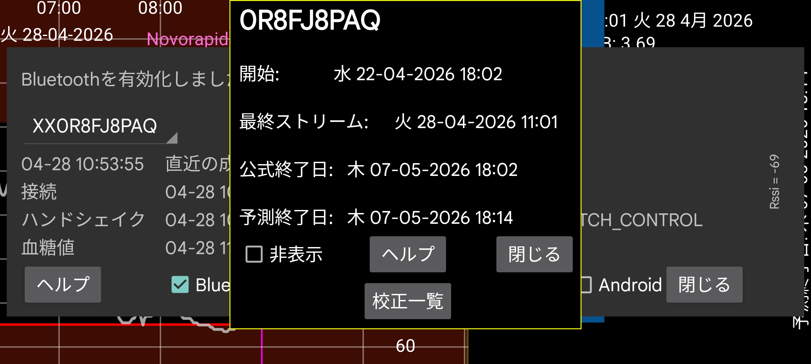

センサーの開始時刻、最終ストリーム、最終スキャン、予想終了時刻、公式終了時刻を表示します。
ウォームアップ: Sibionics と Linx/Lumiflex/Aidex X センサーでは、ウォームアップ期間の分数を変更できます。すべての機能はウォームアップ期間中のデータを無視します: 画面上の曲線、統計、エクスポートデータ、Web サーバーで見えるデータも、過去にさかのぼって無視されます。
非表示: チェックすると曲線を非表示にします。チェックを外すほか、画面右下の「表示」を押して曲線を再表示することもできます。
校正: 左メニュー → 設定 → 校正で血糖ラベルを指定し、左中メニュー → 新規記録で血糖測定値を入力(除外されていない)していれば、「校正」ボタンを押して行われた校正の一覧を取得できます。参照: https://www.juggluco.nl/Juggluco/index.html#calibration
有効化: 終了したセンサーには「有効化」ボタンが表示されます。このボタンを押すと、パッケージのデータマトリクスをスキャンせずにセンサーを再使用できます。Libre 2 と 3 センサーでも使用できますが、別の端末の Juggluco でセンサーをスキャンしたことがある場合は、センサーを取り戻すために常に NFC でセンサーを再スキャンする必要があります。